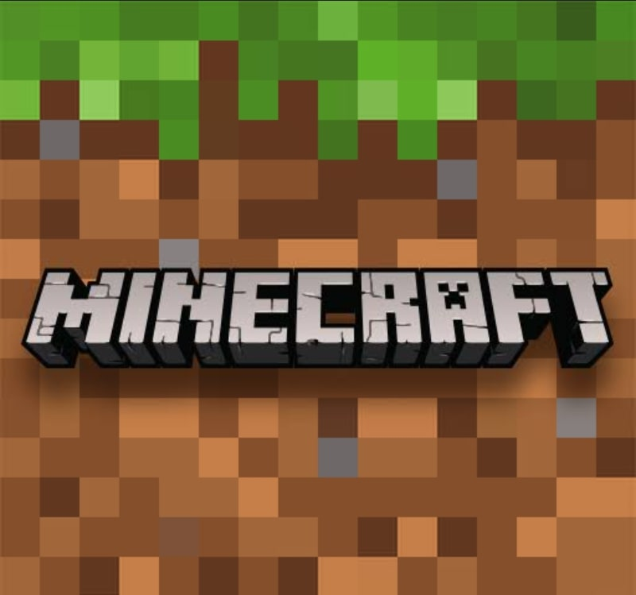
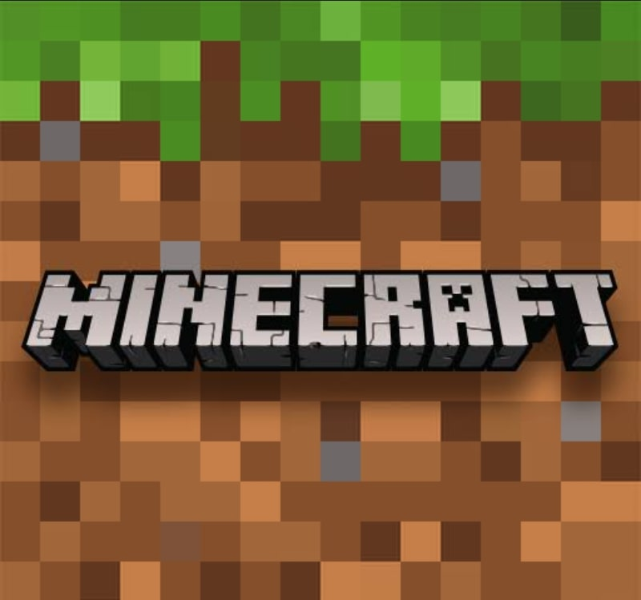

#1 Assasin's Creed Identity.

Returning to a series favorite era and locale (the Italian Renaissance), players set off on a series of missions to solve the Mystery of the Crows. We wish we could tell you more about the story than that, but unlike a traditional Assassin's Creed game in which you live the story through gameplay, the narrative in Identity is doled out in text-based mission descriptions, leaving the gameplay with little more than tasks like "identify the Crow" or "assassinate this character" to forward the plot. Sadly, this isn't the only compromise that's been made for series fans. While Assassin's Creed Identity does its best to recreate the hiding, climbing, and stealthy killing that the franchise is known for, the gameplay feels considerably stripped down from its console counterparts. Rather than having to figure out the best way to ascend a building, for example, you'll simply move your thumb towards a wall and your assassin will automatically scale their way to the top. Murder a guard in broad daylight, and you'll be able to walk away casually 90% of the time. (The other 10% you'll just have to stab whatever guard also saw you, which takes all of two button taps, or escape to a roof and wait until the heat dies down, which seems to take 10-20 seconds).
For Upto 10 Years Old And Ratings Are
Assasin's Creed Identity :CLICK ON PHOTO TO DOWNLOAD:
Returning to a series favorite era and locale (the Italian Renaissance), players set off on a series of missions to solve the Mystery of the Crows. We wish we could tell you more about the story than that, but unlike a traditional Assassin's Creed game in which you live the story through gameplay, the narrative in Identity is doled out in text-based mission descriptions, leaving the gameplay with little more than tasks like "identify the Crow" or "assassinate this character" to forward the plot. Sadly, this isn't the only compromise that's been made for series fans. While Assassin's Creed Identity does its best to recreate the hiding, climbing, and stealthy killing that the franchise is known for, the gameplay feels considerably stripped down from its console counterparts. Rather than having to figure out the best way to ascend a building, for example, you'll simply move your thumb towards a wall and your assassin will automatically scale their way to the top. Murder a guard in broad daylight, and you'll be able to walk away casually 90% of the time. (The other 10% you'll just have to stab whatever guard also saw you, which takes all of two button taps, or escape to a roof and wait until the heat dies down, which seems to take 10-20 seconds).
For Upto 10 Years Old And Ratings Are
Ratings Are: ✯ ✯ ✯ ✯ ✩
#2 Fruit Ninja Classic.

From there, explore the nuances of Classic, Zen and the fan favorite Arcade mode to expand your skills. Slice for a high score, use powerups and special bananas to maximum effect, and go crazy on the multi-slice Pomegranate. All Blades and Dojos now have a unique effect on gameplay.
What is the difference between Fruit Ninja and Fruit Ninja Classic? The paid version of Fruit Ninja doesn't have ads, Starfruit or Golden Apples. Hope this helps!
It was released April 21, 2010 for iPod Touch and iPhone devices, July 12, 2010 for the iPad, September 17, 2010 for Android OS devices. It was released for Windows Phone, on December 22, 2010. ...
Fruit Ninja Classic is a video game developed by Halfbrick.Slice fruit, don’t slice bombs – that is all you need to know to get started with the addictive Fruit Ninja action!
From there, explore the nuances of Classic, Zen and the fan favorite Arcade mode to expand your skills. Slice for a high score, use powerups and special bananas to maximum effect, and go crazy on the multi-slice Pomegranate.
All Blades and Dojos now have a unique effect on gameplay. Want a ten-fruit Great Wave? Bouncing clouds to never drop a fruit? Swirling tornados for epic combos? Mix and match your gear, experiment with all the powers and find what works for you!
There has never been a better time to play Fruit Ninja, so unsheath your sword and see what’s new in the game that started it all.
This is still just the beginning – we can’t wait for everyone to join us!
IMPORTANT NOTICE
This game contains optional in-app purchases. You can disable this feature in the settings menu of your device.
Fruit Ninja Classic : CLICK ON PHOTO TO DOWNLOAD:
From there, explore the nuances of Classic, Zen and the fan favorite Arcade mode to expand your skills. Slice for a high score, use powerups and special bananas to maximum effect, and go crazy on the multi-slice Pomegranate. All Blades and Dojos now have a unique effect on gameplay.
What is the difference between Fruit Ninja and Fruit Ninja Classic? The paid version of Fruit Ninja doesn't have ads, Starfruit or Golden Apples. Hope this helps!
It was released April 21, 2010 for iPod Touch and iPhone devices, July 12, 2010 for the iPad, September 17, 2010 for Android OS devices. It was released for Windows Phone, on December 22, 2010. ...
Fruit Ninja Classic is a video game developed by Halfbrick.Slice fruit, don’t slice bombs – that is all you need to know to get started with the addictive Fruit Ninja action!
From there, explore the nuances of Classic, Zen and the fan favorite Arcade mode to expand your skills. Slice for a high score, use powerups and special bananas to maximum effect, and go crazy on the multi-slice Pomegranate.
All Blades and Dojos now have a unique effect on gameplay. Want a ten-fruit Great Wave? Bouncing clouds to never drop a fruit? Swirling tornados for epic combos? Mix and match your gear, experiment with all the powers and find what works for you!
There has never been a better time to play Fruit Ninja, so unsheath your sword and see what’s new in the game that started it all.
This is still just the beginning – we can’t wait for everyone to join us!
IMPORTANT NOTICE
This game contains optional in-app purchases. You can disable this feature in the settings menu of your device.
Ratings are : ✯ ✯ ✯ ✯ ✩
#3 Human Fall Flat

Human: Fall Flat is a quirky open-ended physics-based puzzle platformer set in floating dreamscapes. Your goal is to find the exit of these surreal levels by solving puzzles with nothing but your wits. Local co-op for 2 players and up to 8 online for even more mayhem.
What type of game is Human: Fall Flat?
physics platformer
Human: Fall Flat is a hilarious, light-hearted physics platformer set in a world of floating dreamscapes. Each dream level provides a new environment to navigate, from mansions, castles and Aztec adventures to snowy mountains, eerie nightscapes and industrial locations.
Human: Fall Flat is a puzzle-platform game developed by Tomas Sakalauskas and published by Curve Digital. It was initially released for Microsoft Windows, macOS, and Linux in July 2016, and received ports for PlayStation 4, PlayStation 5, Xbox One, Xbox Series X/S, Nintendo Switch, Google Stadia, and iOS and Android over the next several years.
The game received mixed reviews. Reviewers praised the replayability of the puzzles and comedic animations. The game has sold more than 30 million copies as of July 2021, making it one of the best selling video games of all-time.
Human Fall Flat : CLICK ON PHOTO TO DOWNLOAD :
Human: Fall Flat is a quirky open-ended physics-based puzzle platformer set in floating dreamscapes. Your goal is to find the exit of these surreal levels by solving puzzles with nothing but your wits. Local co-op for 2 players and up to 8 online for even more mayhem.
What type of game is Human: Fall Flat?
physics platformer
Human: Fall Flat is a hilarious, light-hearted physics platformer set in a world of floating dreamscapes. Each dream level provides a new environment to navigate, from mansions, castles and Aztec adventures to snowy mountains, eerie nightscapes and industrial locations.
Human: Fall Flat is a puzzle-platform game developed by Tomas Sakalauskas and published by Curve Digital. It was initially released for Microsoft Windows, macOS, and Linux in July 2016, and received ports for PlayStation 4, PlayStation 5, Xbox One, Xbox Series X/S, Nintendo Switch, Google Stadia, and iOS and Android over the next several years.
The game received mixed reviews. Reviewers praised the replayability of the puzzles and comedic animations. The game has sold more than 30 million copies as of July 2021, making it one of the best selling video games of all-time.
Ratings Are : ✯ ✯ ✯ ✯ ✩
#4 League Of Stickman-Best Acti.

In console gaming, certain titles get the somewhat derogatory distinction of being “button mashers.” These are also frequently referred to as your “hack-and-slash” fighting or action games, the ones in which the vast majority of the gameplay involves jamming your fingers on one or two different buttons to swing your character’s sword, fists, or whatever weapon they happen to carry to slice up hordes of bad guys. Android phones don’t have buttons, but they do have games like this. So, in order to review League of Stickman, I propose a new term. Let’s call games like this… “screen touchers.”.It is a screen toucher that promises much but delivers little more than casual entertainment. It barely even has stickmen, and that’s right in the title. We can be thankful that the artwork is a little more sophisticated, though, as the game is pretty pleasing to look at. While the character designs are based on that most unlikely of internet action heroes, the stickman, they are embellished with armor, weaponry, and the like until you can’t tell that you are playing as the most rudimentary art form known to man. With dynamic, layered backgrounds and fluid animations, the game at least feels like a lot of work was put into it. The only problem is that all the hacking and slashing gets old, no matter how nice it looks.The game has no story at all. League of Stickman is a straightforward side-scroller that doesn’t feel the need to explain to you why you are traipsing through two-dimensional fields to kill a bunch of monsters. You’re thrown right into the action, playing in a party of heroes with distinct weapons and abilities. The first is a big guy who wields a big sword, and the second one, which you unlock fairly quickly, wields a bow. It’s a nice balance, and being able to switch between controlling different characters helps relieve some of the monotony, but in the end there’s just not a whole lot to do. The reason League of Stickman is a “screen toucher” is because you can literally hold your thumb down on the attack icon and not lift it for an entire level. There are four special attacks per character, which help with especially dense groups of baddies, but aside from that combat is what you’d expect from a side-scrolling action game.
League Of Stickman-Best Acti :CLICK ON THE PHOTO TO DOWNLOAD:
In console gaming, certain titles get the somewhat derogatory distinction of being “button mashers.” These are also frequently referred to as your “hack-and-slash” fighting or action games, the ones in which the vast majority of the gameplay involves jamming your fingers on one or two different buttons to swing your character’s sword, fists, or whatever weapon they happen to carry to slice up hordes of bad guys. Android phones don’t have buttons, but they do have games like this. So, in order to review League of Stickman, I propose a new term. Let’s call games like this… “screen touchers.”.It is a screen toucher that promises much but delivers little more than casual entertainment. It barely even has stickmen, and that’s right in the title. We can be thankful that the artwork is a little more sophisticated, though, as the game is pretty pleasing to look at. While the character designs are based on that most unlikely of internet action heroes, the stickman, they are embellished with armor, weaponry, and the like until you can’t tell that you are playing as the most rudimentary art form known to man. With dynamic, layered backgrounds and fluid animations, the game at least feels like a lot of work was put into it. The only problem is that all the hacking and slashing gets old, no matter how nice it looks.The game has no story at all. League of Stickman is a straightforward side-scroller that doesn’t feel the need to explain to you why you are traipsing through two-dimensional fields to kill a bunch of monsters. You’re thrown right into the action, playing in a party of heroes with distinct weapons and abilities. The first is a big guy who wields a big sword, and the second one, which you unlock fairly quickly, wields a bow. It’s a nice balance, and being able to switch between controlling different characters helps relieve some of the monotony, but in the end there’s just not a whole lot to do. The reason League of Stickman is a “screen toucher” is because you can literally hold your thumb down on the attack icon and not lift it for an entire level. There are four special attacks per character, which help with especially dense groups of baddies, but aside from that combat is what you’d expect from a side-scrolling action game.
Ratings Are : ✯ ✯ ✯ ✯ ✩
#5 Minecraft.

Minecraft is a sandbox game developed by Mojang Studios. The game was created by Markus "Notch" Persson in the Java programming language. Following several early private testing versions, it was first made public in May 2009 before being fully released in November 2011, with Notch stepping down and Jens "Jeb" Bergensten taking over development. Minecraft is the best-selling video game of all time, with over 238 million copies sold and nearly 140 million monthly active players as of 2021, and has been ported to several platforms.In Minecraft, players explore a blocky, procedurally generated 3D world with virtually infinite terrain and may discover and extract raw materials, craft tools and items, and build structures, earthworks, and simple machines. Depending on their chosen game mode, players can fight hostile mobs, as well as cooperate with or compete against other players in the same world.No other video game has unleashed my creativity like Minecraft. I've spent countless hours chipping away at blocks, gathering the necessary materials to complete the next masterpiece that would otherwise only occupy my mind's eye. I've also spent just as many hours exploring, spelunking and slashing my way through monsters with bravado. My character – my entire Minecraft world – constantly evolves into whatever I want it to be. I tell my own stories, I write my own destiny and I bring my fantasies to life one brick at a time.Minecraft stands out not only for the way it inspires me creatively, but also because of its unique aesthetic. Look, I know the visuals look dated and a bit silly, but few games have visuals so endearing and charming. I know I'm not the only one who feels that way either, or else Minecraft's graphics wouldn't be so iconic. Could you take a texture from Gears of War, Halo or Uncharted, put it on a shirt and have players identify it? I doubt it. The looks just work, giving the game a super unique appearance that's memorable, and brings up a bit of nostalgia in me for 8-bit era games.

Minecraft :CLICK ON THE PHOTO TO DOWNLOAD:
Minecraft is a sandbox game developed by Mojang Studios. The game was created by Markus "Notch" Persson in the Java programming language. Following several early private testing versions, it was first made public in May 2009 before being fully released in November 2011, with Notch stepping down and Jens "Jeb" Bergensten taking over development. Minecraft is the best-selling video game of all time, with over 238 million copies sold and nearly 140 million monthly active players as of 2021, and has been ported to several platforms.In Minecraft, players explore a blocky, procedurally generated 3D world with virtually infinite terrain and may discover and extract raw materials, craft tools and items, and build structures, earthworks, and simple machines. Depending on their chosen game mode, players can fight hostile mobs, as well as cooperate with or compete against other players in the same world.No other video game has unleashed my creativity like Minecraft. I've spent countless hours chipping away at blocks, gathering the necessary materials to complete the next masterpiece that would otherwise only occupy my mind's eye. I've also spent just as many hours exploring, spelunking and slashing my way through monsters with bravado. My character – my entire Minecraft world – constantly evolves into whatever I want it to be. I tell my own stories, I write my own destiny and I bring my fantasies to life one brick at a time.Minecraft stands out not only for the way it inspires me creatively, but also because of its unique aesthetic. Look, I know the visuals look dated and a bit silly, but few games have visuals so endearing and charming. I know I'm not the only one who feels that way either, or else Minecraft's graphics wouldn't be so iconic. Could you take a texture from Gears of War, Halo or Uncharted, put it on a shirt and have players identify it? I doubt it. The looks just work, giving the game a super unique appearance that's memorable, and brings up a bit of nostalgia in me for 8-bit era games.